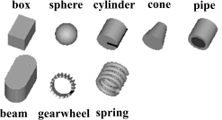
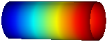
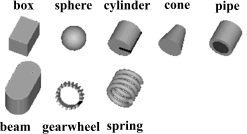
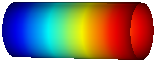
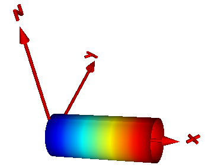

Package Visualizers.Advanced contains components to visualize 3-dimensional shapes with dynamical sizes. None of the components has a frame connector. The position and orientation is set via modifiers. Basic knowledge of Modelica is needed in order to utilize the components of this package. These components have also to be used for models, where the forces and torques in the frame connector are set via equations (in this case, the models of the Visualizers package cannot be used, since they all have frame connectors).
| Arrow | Visualizing an arrow where all parts of the arrow can vary dynamically: |
| DoubleArrow | Visualizing a double arrow where all parts of the arrow can vary dynamically:
|
| Shape | Visualizing an elementary object with variable size.
The following shape types are supported:  |
| Surface | Visualizing a moveable parameterized surface:
|
| PipeWithScalarField | Visualizing a pipe with a scalar field represented by a color coding:  |
| Name | Description |
|---|---|
| Arrow | Visualizing an arrow with variable size; all data have to be set as modifiers (see info layer) |
| DoubleArrow | Visualizing a double arrow with variable size; all data have to be set as modifiers (see info layer) |
| Shape | Visualizing an elementary object with variable size; all data have to be set as modifiers (see info layer) |
| Surface | Visualizing a moveable, parameterized surface; the surface characteristic is provided by a function |
| PipeWithScalarField | Visualizing a pipe with a scalar field |
| Functions returning surface descriptions |
Model Arrow defines an arrow that is dynamically visualized at the defined location (see variables below).

The variables under heading Parameters below are declared as (time varying) input variables. If the default equation is not appropriate, a corresponding modifier equation has to be provided in the model where an Arrow instance is used, e.g., in the form
Visualizers.Advanced.Arrow arrow(diameter = sin(time));
Variable color is an Integer vector with 3 elements, {r, g, b}, and specifies the color of the shape. {r,g,b} are the "red", "green" and "blue" color parts. Note, r g, b are given in the range 0 .. 255. The predefined type MultiBody.Types.Color contains a menu definition of the colors used in the MultiBody library (will be replaced by a color editor).
| Name | Description |
|---|---|
| R | Orientation object to rotate the world frame into the arrow frame |
| r[3] | Position vector from origin of world frame to origin of arrow frame, resolved in world frame [m] |
| r_tail[3] | Position vector from origin of arrow frame to arrow tail, resolved in arrow frame [m] |
| r_head[3] | Position vector from arrow tail to the head of the arrow, resolved in arrow frame [m] |
| diameter | Diameter of arrow line [m] |
| color | Color of arrow |
| specularCoefficient | Material property describing the reflecting of ambient light (= 0 means, that light is completely absorbed) |
Model DoubleArrow defines a double arrow that is dynamically visualized at the defined location (see variables below).
The variables under heading Parameters below are declared as (time varying) input variables. If the default equation is not appropriate, a corresponding modifier equation has to be provided in the model where an Arrow instance is used, e.g., in the form
Visualizers.Advanced.DoubleArrow doubleArrow(diameter = sin(time));
Variable color is an Integer vector with 3 elements, {r, g, b}, and specifies the color of the shape. {r,g,b} are the "red", "green" and "blue" color parts. Note, r g, b are given in the range 0 .. 255. The predefined type MultiBody.Types.Color contains a menu definition of the colors used in the MultiBody library (will be replaced by a color editor).
| Name | Description |
|---|---|
| R | Orientation object to rotate the world frame into the arrow frame |
| r[3] | Position vector from origin of world frame to origin of arrow frame, resolved in world frame [m] |
| r_tail[3] | Position vector from origin of arrow frame to double arrow tail, resolved in arrow frame [m] |
| r_head[3] | Position vector from double arrow tail to the head of the double arrow, resolved in arrow frame [m] |
| diameter | Diameter of arrow line [m] |
| color | Color of double arrow |
| specularCoefficient | Material property describing the reflecting of ambient light (= 0 means, that light is completely absorbed) |
Model Shape defines a visual shape that is shown at the location of its reference coordinate system, called 'object frame' below. All describing variables such as size and color can vary dynamically (with the only exception of parameter shapeType). The default equations in the declarations should be modified by providing appropriate modifier equations. Model Shape is usually used as a basic building block to implement simpler to use graphical components.
The following shapes are supported via
parameter shapeType (e.g., shapeType="box"):

The dark blue arrows in the figure above are directed along
variable lengthDirection. The light blue arrows are directed
along variable widthDirection. The coordinate systems
in the figure represent frame_a of the Shape component.
Additionally, external shapes can be specified as (not all options might be supported by all tools):
The supported file formats are tool dependent. Most tools support at least DXF-files (a tool might support 3-dim. Face of the DXF format only), but may support other format as well (such as stl, obj, 3ds). Since visualization files contain color and other data, the corresponding information in the model is usually ignored.
The sizes of any of the above components are specified by the length, width and height variables. Via variable extra additional data can be defined:
| shapeType | Meaning of parameter extra |
|---|---|
| "cylinder" | if extra > 0, a black line is included in the cylinder to show the rotation of it. |
| "cone" | extra = diameter-left-side / diameter-right-side, i.e., extra = 1: cylinder extra = 0: "real" cone. |
| "pipe" | extra = outer-diameter / inner-diameter, i.e, extra = 1: cylinder that is completely hollow extra = 0: cylinder without a hole. |
| "gearwheel" | extra is the number of teeth of the (external) gear. If extra < 0, an internal gear is visualized with |extra| teeth. The axis of the gearwheel is along "lengthDirection", and usually: width = height = 2*radiusOfGearWheel. |
| "spring" | extra is the number of windings of the spring. Additionally, "height" is not the "height" but 2*coil-width. |
| external shape | extra = 0: Visualization from file is not scaled. extra = 1: Visualization from file is scaled with "length", "width" and height" of the shape |
Parameter color is a vector with 3 elements, {r, g, b}, and specifies the color of the shape. {r,g,b} are the "red", "green" and "blue" color parts. Note, r g, b are given as Integer[3] in the ranges 0 .. 255, respectively. The predefined type MultiBody.Types.Color contains a menu definition of the colors used in the MultiBody library together with a color editor.
The variables under heading Parameters below are declared as (time varying) input variables. If the default equation is not appropriate, a corresponding modifier equation has to be provided in the model where a Shape instance is used, e.g., in the form
Visualizers.Advanced.Shape shape(length = sin(time));
Extends from ModelicaServices.Animation.Shape (Different visual shapes with variable size; all data have to be set as modifiers (see info layer)), Modelica.Utilities.Internal.PartialModelicaServices.Animation.PartialShape (Interface for 3D animation of elementary shapes).
| Name | Description |
|---|---|
| shapeType | Type of shape (box, sphere, cylinder, pipecylinder, cone, pipe, beam, gearwheel, spring, <external shape>) |
| R | Orientation object to rotate the world frame into the object frame |
| r[3] | Position vector from origin of world frame to origin of object frame, resolved in world frame [m] |
| r_shape[3] | Position vector from origin of object frame to shape origin, resolved in object frame [m] |
| lengthDirection[3] | Vector in length direction, resolved in object frame [1] |
| widthDirection[3] | Vector in width direction, resolved in object frame [1] |
| length | Length of visual object [m] |
| width | Width of visual object [m] |
| height | Height of visual object [m] |
| extra | Additional size data for some of the shape types |
| color[3] | Color of shape |
| specularCoefficient | Reflection of ambient light (= 0: light is completely absorbed) |
Model Surface defines a moveable, parametrized surface in 3-dim. space that is used for animation. This object is specified by:
The parameter values (u,v) are given by the ordinal numbers of the corresponding control point in u- or in v-direction, respectively. The surface is then defined by the replaceable function "surfaceCharacteristic" with the interface partialSurfaceCharacteristic that returns the x-, y-, z- coordinate of every control point in form of 3 arrays X, Y, Z, and an optional color array C, if every control point shall have a different color:
Real X[nu,nv], Y[nu,nv], Z[nu,nv], C[nu,nv,3];
An example of a parameterized surface with color coding is shown in the next figure:
Models Torus,
VoluminousWheel,
PipeWithScalarField,
demonstrate how new visualizer objects can be constructed with the Surface model.
The direct usage of the Surface model, as well as of the Torus and the VoluminousWheel models, are demonstrated with example
Examples.Elementary.Surfaces.
| Name | Description |
|---|---|
| Surface frame | |
| R | Orientation object to rotate the world frame into the surface frame |
| r_0[3] | Position vector from origin of world frame to origin of surface frame, resolved in world frame [m] |
| Surface properties | |
| nu | Number of points in u-Dimension |
| nv | Number of points in v-Dimension |
| replaceable function surfaceCharacteristic | Function defining the surface characteristic |
| Material properties | |
| wireframe | = true: 3D model will be displayed without faces |
| multiColoredSurface | = true: Color is defined for each surface point |
| color[3] | Color of surface |
| specularCoefficient | Reflection of ambient light (= 0: light is completely absorbed) |
| transparency | Transparency of shape: 0 (= opaque) ... 1 (= fully transparent) |
Model PipeWithScalarField visualizes a pipe and a scalar field along the pipe axis. The latter is shown by mapping scalar field to color values with a color map and utilizing this color at the perimeter associated with the corresponding axis location. Typically the scalar field value is a temperature, but might be also another quantity. Predefined color maps are available from MultiBody.Visualizers.Colors.ColorMaps and can be selected via parameter "colorMap". A color map with the corresponding scalar field values can be exported as vector-graphics in svg-format with function MultiBody.Visualizers.Colors.colorMapToSvg. The position and orientation of the center of the circle at the left end of the pipe is defined via parameters "r_0" and "R", respectively. The pipe axis is oriented along the x-axis of the local coordinate system described by "R", see figure below:

The color coding is shown in the next figure. It was generated with MultiBody.Visualizers.Colors.colorMapToSvg using the following call:
colorMapToSvg(Modelica.Mechanics.MultiBody.Visualizers.Colors.ColorMap.jet(),
height=50, nScalars=6, T_max=100, caption="Temperature in C");
| Name | Description |
|---|---|
| Surface frame | |
| R | Orientation object to rotate the world frame into the surface frame |
| r_0[3] | Position vector from origin of world frame to origin of surface frame, resolved in world frame [m] |
| Surface properties | |
| rOuter | Outer radius of pipe [m] |
| length | Length of pipe [m] |
| n_rOuter | Number of points along outer radius |
| n_length | Number of points along length |
| specularCoefficient | Reflection of ambient light (= 0: light is completely absorbed) |
| transparency | Transparency of shape: 0 (= opaque) ... 1 (= fully transparent) |
| Color coding | |
| xsi[:] | [:] Relative position along the pipe with x[1] = 0, x[end] = 1 |
| T[size(xsi, 1)] | [:] Scalar values at position xsi*length (will be visualized by color) |
| T_min | Minimum value of T that corresponds to colorMap[1,:] |
| T_max | Maximum value of T that corresponds to colorMap[end,:] |
| n_colors | Number of colors in the colorMap |
| replaceable function colorMap | Function defining the color map |
| Name | Description |
|---|---|
| Color coding | |
| replaceable function colorMap | Function defining the color map |